Ich war schon als Fräser neugierig, wie Dinge funktionieren und diese Neugier hat mich nie wirklich losgelassen. Über den Techniker und jetzt den angehenden Betriebswirt bin ich zwar den "offiziellen" Weg gegangen, aber nebenbei hab ich eigentlich immer irgendwas gebaut: mit Arduino, mit KI-Tools, mit allem, was gerade greifbar war. Meistens, weil ich einfach wissen wollte, ob eine Idee funktioniert und nicht, weil's jemand von mir verlangt hat.
NFC-Tracking für Fertigungsaufträge
In vielen Fertigungsbetrieben laufen Aufträge noch papierbasiert, der Meister muss selbst in die Fertigung laufen, um zu sehen, wo ein Auftrag gerade steht. Ich habe ein System aus Arduino und NFC-Reader gebaut, bei dem einfach ein NFC-Tag auf den bestehenden Auftragszettel geklebt wird. Für die Mitarbeiter ändert sich nichts am Ablauf, die Zettel werden wie gewohnt in die vorgesehenen Ablagen gelegt. Ein Reader an jeder Station erkennt automatisch, wo sich welcher Auftrag befindet und wie lange er dort ist. Der Meister sieht das live auf einem Dashboard, ohne selbst nachschauen zu müssen. Dieses Projekt ist aus einem eigenen Problem entstanden, das ich während meiner Arbeit als Zerspanungsmechaniker erkannt habe.
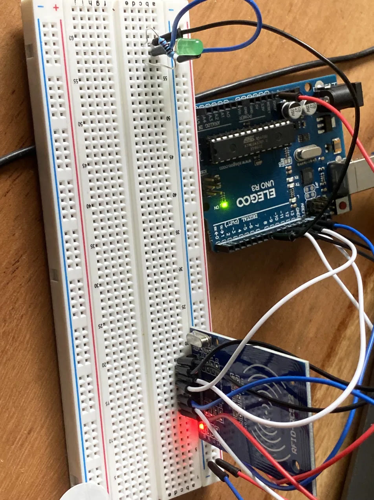
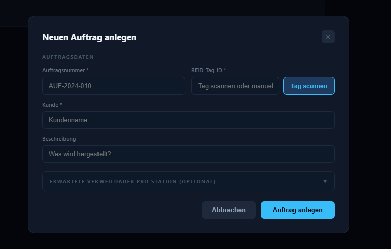
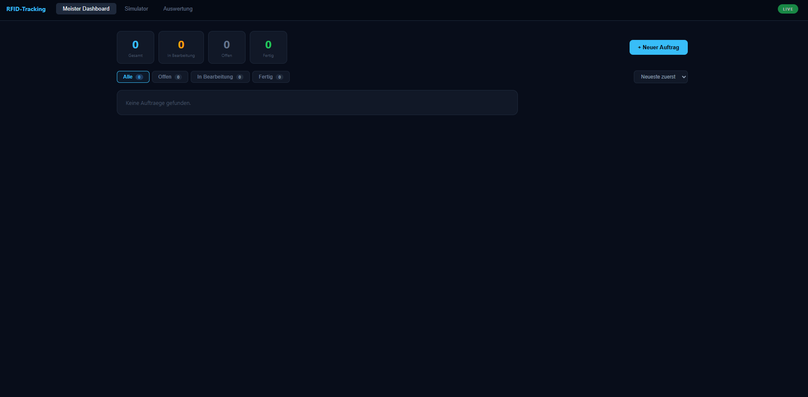
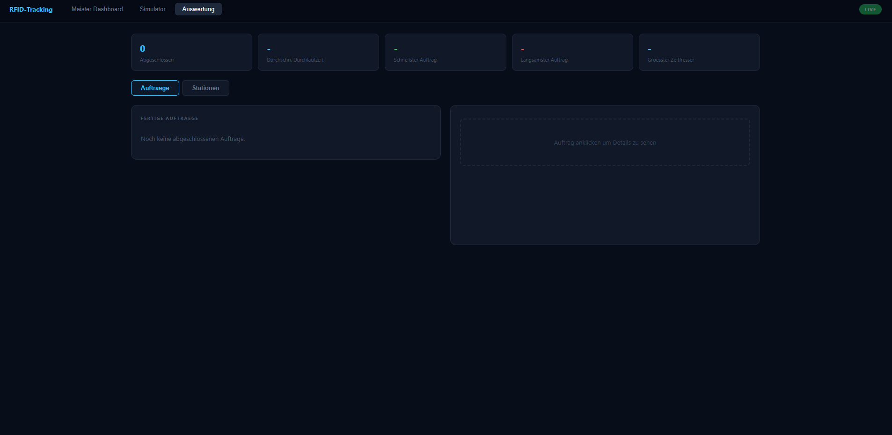
Bildschirmpausen-Erkennung per Computer Vision
Eine Webapp, die anhand eines trainierten Python-Modells Veränderungen an den Augen bei Bildschirmnutzung erkennen und den Nutzer rechtzeitig auf eine Pause hinweisen sollte. Eine gute Lernerfahrung darüber, wie Machine-Learning-Projekte in der Praxis angewendet werden können.
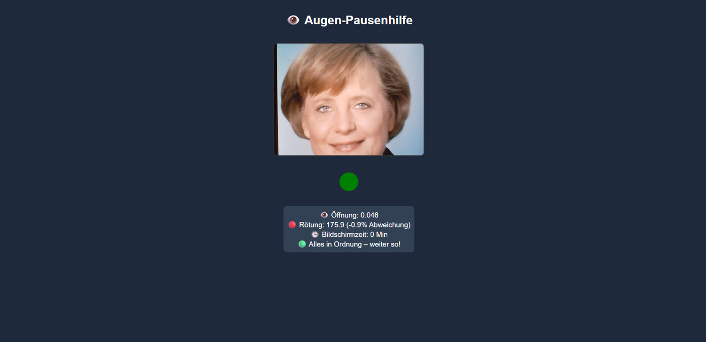
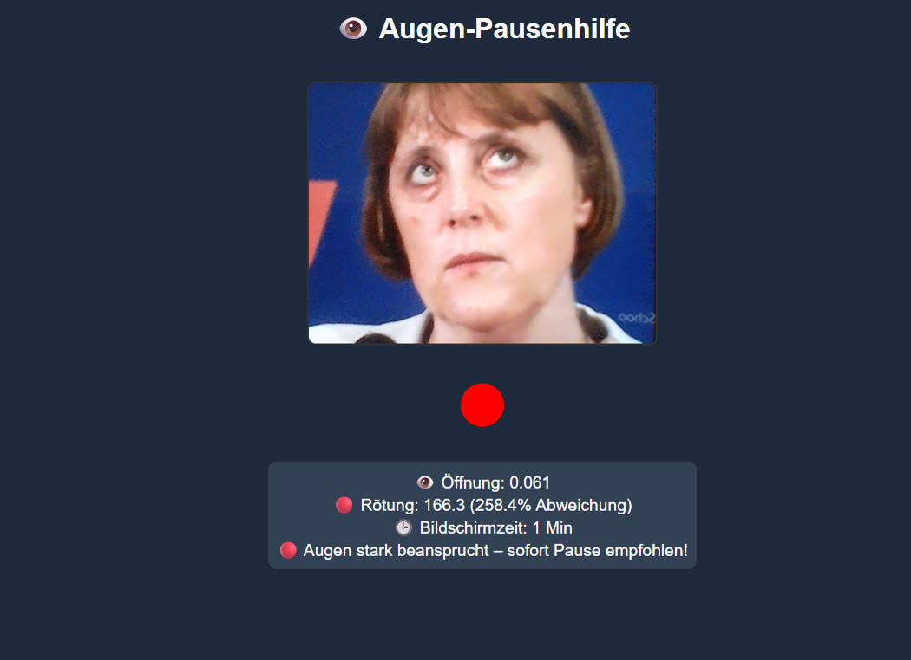
App "Mutig"
Eine App, die verpasste Momente wieder erkennbar macht, komplett mit KI-Unterstützung (Claude) und VS Code gebaut, inklusive Backend-Anbindung über Firebase. Als funktionierendes MVP auf meinem Android-Smartphone getestet. Beeindruckend für mich selbst, wie moderne KI-Tools unterstützen, um eigene Ideen schnell in echte Software umzusetzen. Von Registration / Login, bis hin zu Postings und Nachrichten.
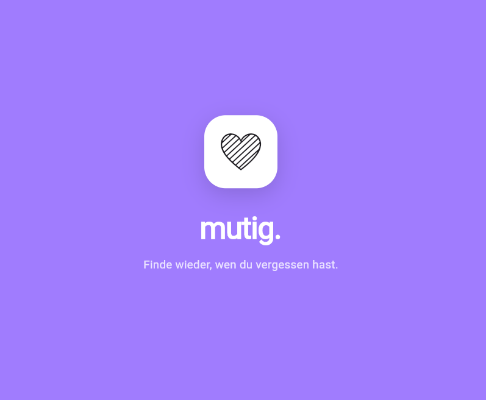
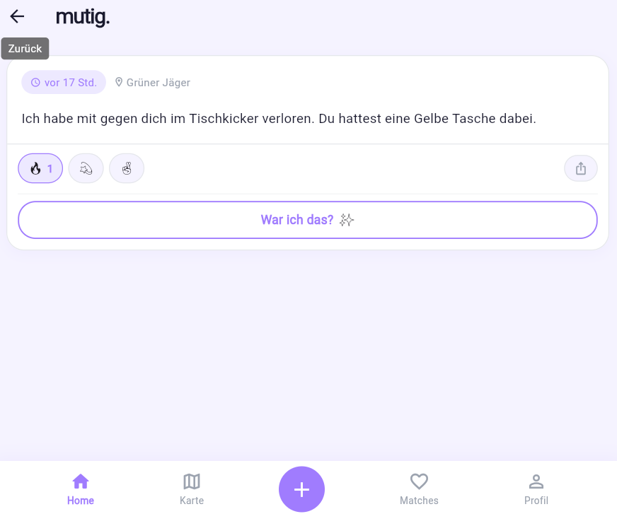
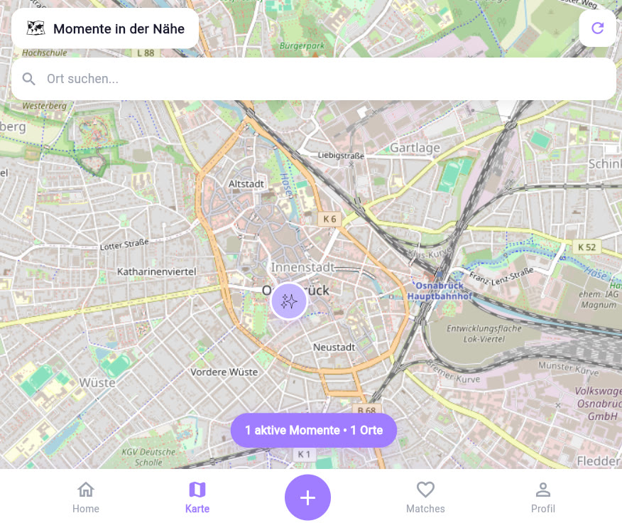
TouchClean
Ein Gerät zur Desinfektion von Smartphones an öffentlichen Orten wie Gastro oder Toiletten. Entstanden als Projekt während meiner Techniker-Weiterbildung. Die Grundidee kam von mir, umgesetzt haben wir sie zu viert, begleitet von einer Lehrkraft, von der Konzeptphase bis zur Entwicklung. Angewandt haben wir dabei bewährte Methoden aus der Techniker-Ausbildung, von der Konzeptbewertung bis zur 3D-Konstruktion.
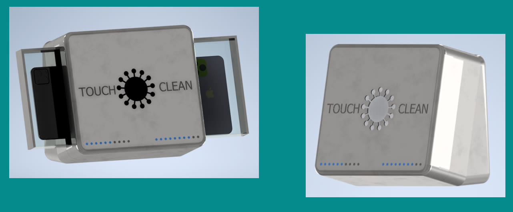
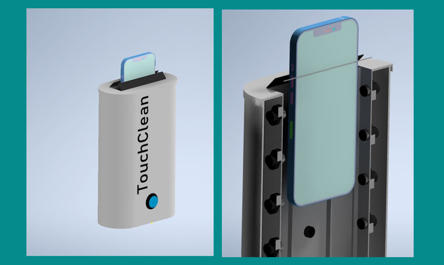
Optimierung der Hydraulik-Montage bei Rheinmetall
Mein Techniker-Abschlussprojekt: Analyse des bestehenden Montageprozesses von Hydraulikkomponenten bei Rheinmetall. Ziel war es, den Ist-Prozess systematisch zu untersuchen, Schwachstellen und Zeitverluste zu identifizieren und darauf aufbauend ein konkretes Optimierungskonzept zu entwickeln. Angewandt haben wir dabei bewährte Methoden und Techniken, die uns während der Techniker-Weiterbildung vermittelt wurden.
Das Projekt hat gezeigt, wie ich technisches Prozessverständnis mit wirtschaftlicher Bewertung verbinde.
Manche Tools kenne ich aus Ausbildung, Job oder Weiterbildung, andere hab ich mir selbst beigebracht.